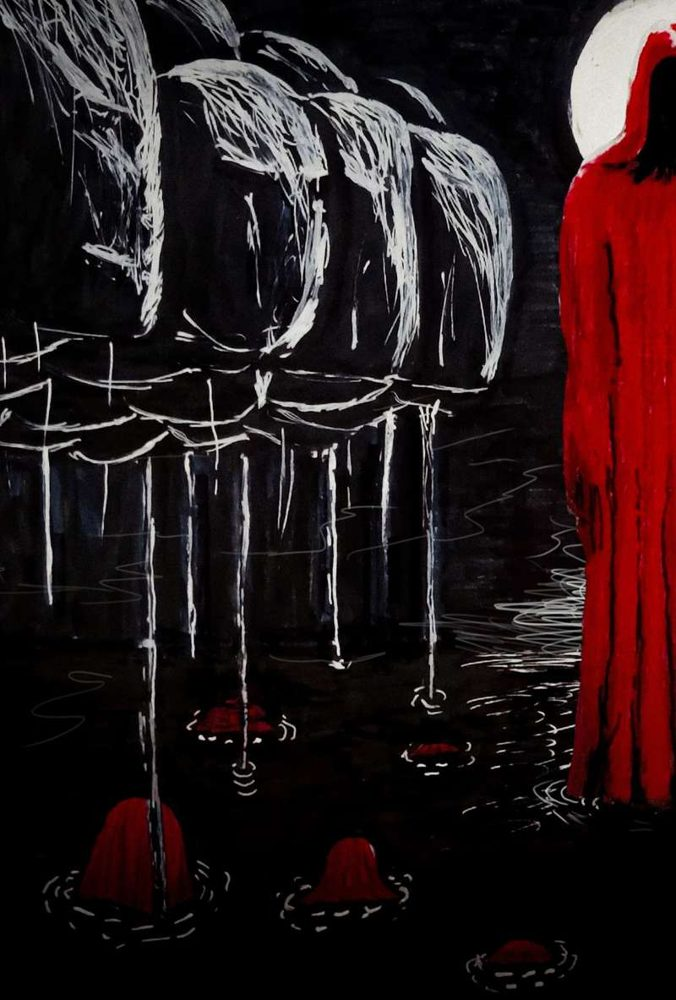

The Day of the Bomb

The air raid siren began. My antennae could sense the environment changing; there was a commotion everywhere. Children, women and the elderly ran a marathon toward the nearest shelters; desperate screams could be heard. A deafening blast reduced everything to rubble; the world had come to a standstill. I watched the scene from the crack in the window of an abandoned building. When I came out of the crack, the building had gotten smaller; the piece of wall holding the window was no longer on the second floor. I was no longer high up on the building, I had crashed down along with that window! My surroundings felt chaotic; my antennae warned me. Even though I suffered no physical harm, that was when curiosity got the better of me: without my legs trembling, I came out of the crack to see what was happening. "Hiroshima" reduced to ashes; the plants lost their green color, the ants went crazy, the crickets didn't sing in the trees, the sparrows lay on the ground stiff as if they were made of stone.
I felt terror seeing those anthropomorphic bodies in agony, spitting blood with their limbs torn out of their bodies. Should I feel glad? They massacre my species without any mercy. I don't think I'm more repulsive than they are; killing each other, now that really is a miserable act. All I could feel was a deep depression and pity. The streets were covered with their bodies, the smoke contaminated the atmosphere. I just ask myself: are they really the most intelligent creatures in the world? We were the only ones who survived that day. What luck to be a cockroach.
First Hiroshima, then Nagasaki; the news came out in "El Cucarachero" (international newspaper for cockroaches), on August 15, 1945. Surviving that day, we thought ourselves invincible. Even so, we keep dying flattened.
Twenty-three more stories like this one, each with its own drawing, are waiting in the book.